What I bring
A scientist-developer mindset: I care about the accuracy of a model, the quality of its implementation, and the clarity of the scientific decision it enables.
I’m Dineli T. S. Ranathunga, Ph.D. — a computational chemist and scientific software developer specializing in molecular dynamics, quantum mechanics, free-energy calculations, force-field development, and AI/ML-driven predictive modeling. My work spans drug discovery, drug delivery and formulation, biophysics, materials, and engineering.
I develop computational approaches that help scientists understand molecular behavior, interactions, and properties, enabling informed scientific and practical decisions. My work integrates computational chemistry, molecular simulation, data-driven modeling, and scientific software development across drug discovery, drug delivery, formulation, biophysics, materials science, and engineering.
A scientist-developer mindset: I care about the accuracy of a model, the quality of its implementation, and the clarity of the scientific decision it enables.
I collaborate across chemistry, biology, pharmaceutical science, medicine, engineering, and materials science to translate complex computational results into reproducible workflows, practical tools, and actionable scientific insights.
My research spans multiple scales, from small molecules to large biomolecular systems.
Developing and applying atomistic, coarse-grained, polarizable, and machine-learning force-field workflows for chemically diverse systems.
Using FEP, umbrella sampling, metadynamics, ABF, and SMD to study binding, permeation, folding, adsorption, and molecular recognition.
Building MD, QM, AI/ML, QSAR/QSPR, and PBPK-linked workflows for solubility, dissolution, permeability, formulation, delivery, and ADMET questions.
Modeling proteins, peptides, ligands, membranes, nucleosomes, transport-related systems, and protein-surface interactions.
Connecting molecular-level structure and dynamics to polymers, ionic liquids, nanoparticles, titanium implants, self-assembled monolayers, and surfaces.
Developing reproducible Python and C/C++ tools for Linux, HPC, GPU-enabled, and cloud workflows using MPI, CUDA, AWS, and Rescale.
Explore selected research themes and the computational methods used to address them. Select a visualization to read the detailed project history.
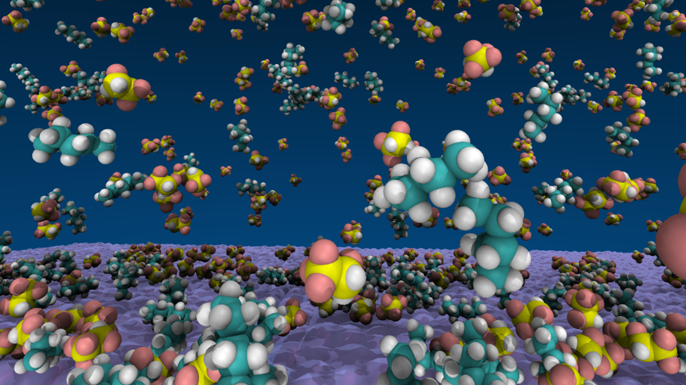
Implant therapeutics and molecular interactionsDrug design and delivery · View research details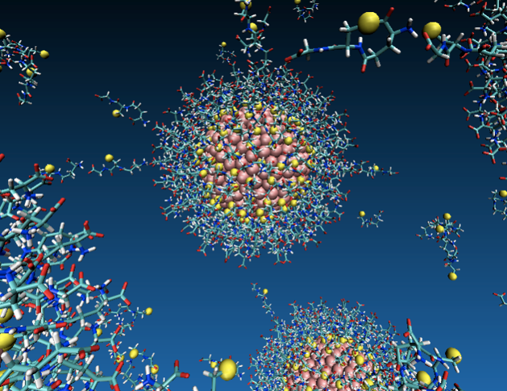
Bio-based ionic liquidsForce fields, MD, and QM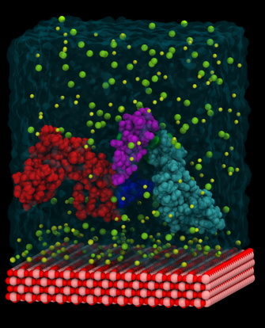
Protein–surface interactionsHMGB1 delivery systems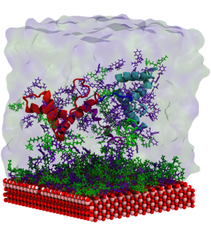
Titanium implant coatingsDrug-release and adsorption studies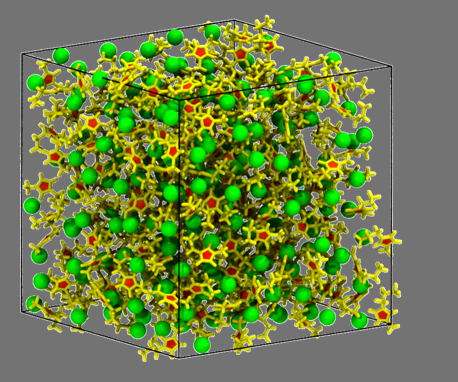
Ionic-liquid property predictionThermophysical properties and green chemistry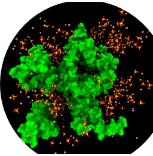
Breast-cancer therapeuticsMD, FEP, PROTACs, and PTMs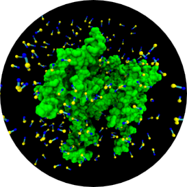
Nucleosomal histone dynamicsMolecular recognition and interactions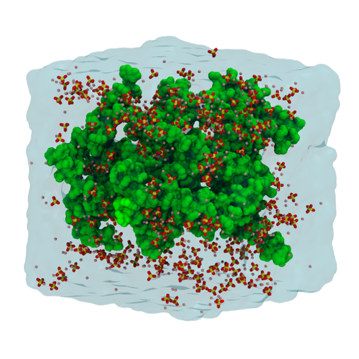
Nanoparticles and imaging systemsOncology drug-development research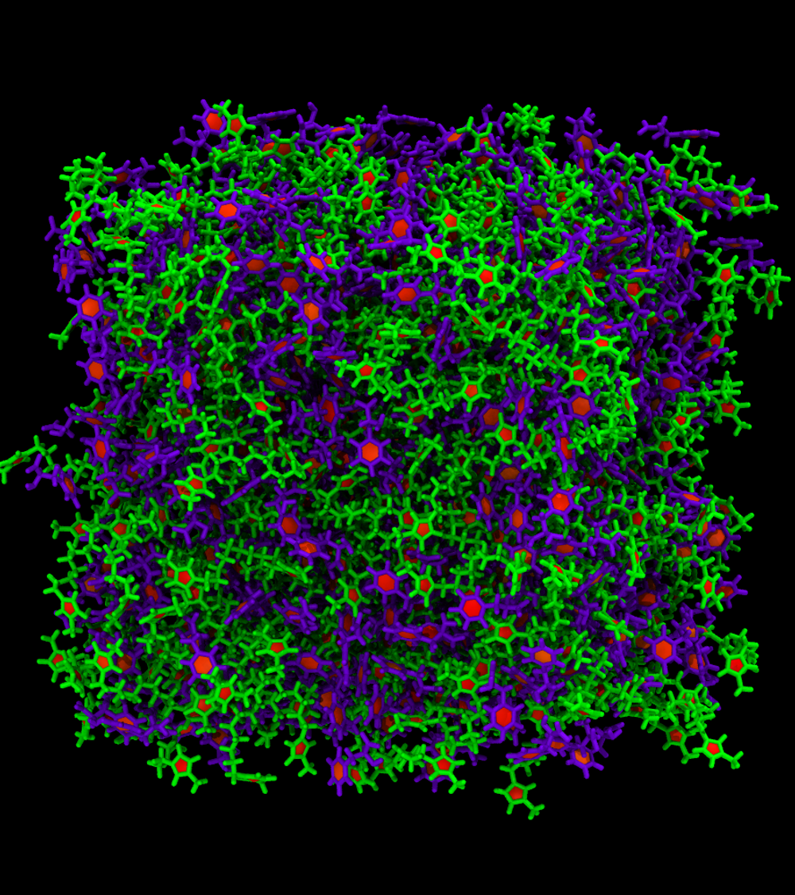
Polymer sensors and molecular recognitionIn silico modeling in water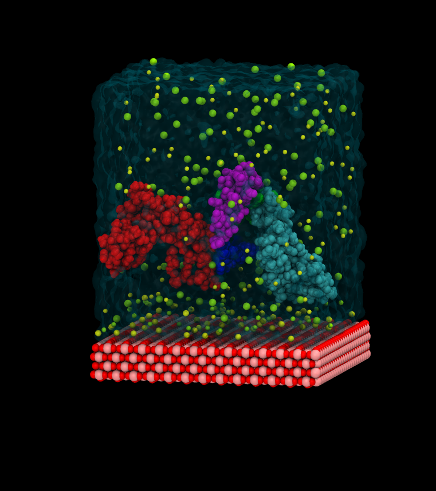
Protein folding and encapsulationCoarse-grained molecular dynamics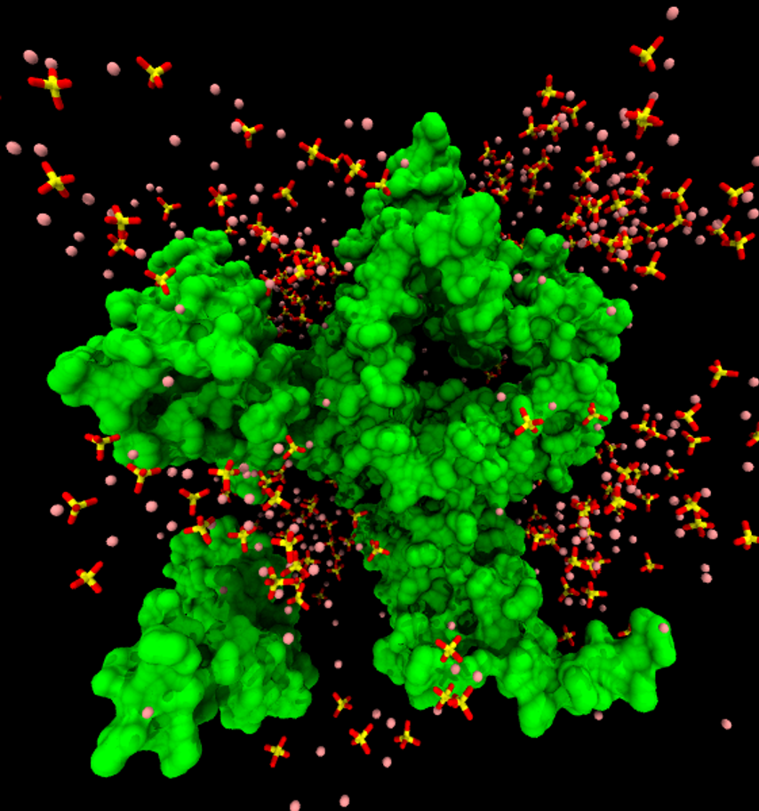
Wettability and condensationWater harvesting and thermal managementSelected milestones from industry and academic research.
Lead computational chemistry work across early-stage drug development projects; Develop and apply MD, QM, FEP, force-field, AI/ML, QSAR/QSPR, and statistical modeling workflows to support compound-lead selection, solubility and bioavailability enhancement, nitrosamine risk-prediction, drug delivery, formulation development, and ADMET evaluation.
Integrated MD, QM, AI/ML, and PBPK approaches; Developed workflows for dissolution and permeability predictions; Optimized HPC and cloud workflows and supported computational drug-development decisions.
Developed AMOEBA polarizable force fields for bio-based ionic liquids using MD and QM methods; Applied MD/FEP approaches approaches to support large-molecule drug development, including breast-cancer therapeutics and nucleosomal systems.
Conducted computational research across drug discovery, formulation, drug delivery, and materials applications; Developed and applied molecular modeling workflows using atomistic and coarse-grained MD, QM, FEP, docking, homology modeling, mutation analysis, force-field development, QSAR/QSPR, AI/ML, and statistical modeling;Studied complex biological and chemical systems, span from small molecules to large bio-molecules; Integrated computational insights into medicinal-chemistry workflows; Edited LAMMPS source code to support coarse-grained simulations.
Led quality-assurance laboratory operations, including chemical and microbiological testing, routine analysis, sensory evaluation, and training of technical staff and tasting panels. Supported the first Sri Lankan production of Tiger beer to Heineken quality standards; maintained HARA, HAMRA, and ISO compliance; and completed a research project to reduce dissolved oxygen levels in beer.
Topical drug development: MD simulations on lipid-based drug delivery systems (SEDDs); Developed SDK coarse-grained forcefields for triolein and beta-carotene.
Identification systems for ingredients/raw materials used in cosmetic industry
Proficient in rapidly adapting to new programming languages and leveraging AI-assisted development tools for efficient code generation, optimization, and scientific computing.
Selected peer-reviewed journal articles, conference papers, and contributions.
Ranathunga, D. T. S.; Ranatunga U.; et al. “A theoretical study on the stability of designed microemulsions.” Proceedings of the Peradeniya University International Research Session, 18. First author.
Karim, M. R.; Li, X.; Kang, P.; Randrianalisoa, J.; Ranathunga, D. T. S.; Nielsen, S.; Qin, Z.; Qian, D. “Ultrafast pulsed laser-induced nanocrystal transformation in colloidal plasmonic vesicles.” Advanced Optical Materials, 6, 1800726.
Kam, H. C.; Ranathunga, D. T. S.; Payne, E. R.; Smaldone, R. A.; Nielsen, S. O.; Dodani, S. C. “Spectroscopic characterization and in silico modelling of polyvinylpyrrolidone as an anion-responsive fluorescent polymer in aqueous media.” Supramolecular Chemistry, 31, 514–522. Co-first author.
Ranathunga, D. T. S.; Shamir, A.; Dai, X.; Nielsen, S. O. “Molecular dynamics simulations of water condensation on surfaces with tunable wettability.” Langmuir, 36, 7383–7391. First author.
Kuhn, B. L.; Osmari, B. F.; Heinen, T. M.; Bonacorso, H. G.; Zanatta, N.; Nielsen, S. O.; Ranathunga, D. T. S.; Villetti, M. A.; Frizzo, C. P. “Dicationic imidazolium-based dicarboxylate ionic liquids: Thermophysical properties and solubility.” Journal of Molecular Liquids, 308.
Nelumdeniya, N. R. M.; Ranathunga, D. T. S.; et al. “Size dependence of host–guest interactions of β-cyclodextrin in silico.” Proceedings of the PGIS Research Congress, 7.
Dharmadasa, A. G. S. V. B.; Ranathunga, D. T. S.; et al. “Effect of hydrophobicity on entrapment efficiency of dendrimers.” Proceedings of the PGIS Research Congress, 7.
Kannangara, D. N. M.; Nelumdeniya, N. R. M.; Ranathunga, D. T. S.; et al. “Generation of a coarse-grained molecular mechanics model for poloxamer molecules.” Proceedings of the PGIS Research Congress, 7.
Ranathunga, D. T. S.; Arteaga, A.; Biguetti, C. C.; Rodrigues, D. C.; Nielsen, S. O. “Molecular-level understanding of the influence of ions and water on HMGB1 adsorption induced by surface hydroxylation of titanium implants.” Langmuir, 37, 10100–10114. First author.
Vieira, J. C. B.; Ranathunga, D. T. S.; Nielsen, S. O.; Villetti, M. A.; Frizzo, C. P. “Experimental and theoretical heat capacity of mono- and dicationic long alkyl chain imidazolium-based ionic liquids.” Journal of Ionic Liquids, 2, 100048. Co-first author.
Ranathunga, D. T. S.; Torabifard, H. “Histone tail electrostatics modulate E2–E3 enzyme dynamics: A gateway to regulate ubiquitination machinery.” Physical Chemistry Chemical Physics, 25, 3361–3374. First author.
Arteaga, A.; Ranathunga, D. T. S.; Qu, J.; Biguetti, C. C.; Nielsen, S. O.; Rodrigues, D. C. “Exogenous protein delivery of ionic liquid-mediated HMGB1 coating on titanium implants.” Langmuir, 39, 2204–2217. Co-first author.
Konagurthu, S.; Ranathunga, D. T. S.; Buchanan, S.; Mehta, N. M.; Reynolds, T. “The predictive edge: modeling and simulation in drug product development.” Advanced Drug Delivery Reviews, 230, 115784. Co-first author.
Ranathunga, D. T. S.; Reynolds, T.; Konagurthu, S. “Predicting drug dissolution performance using molecular dynamics simulations.” White paper in progress. First author.
Ranathunga, D. T. S.; Relix, D.; Torabifard, H. “Computational design, modeling, and properties determination of novel greener ionic liquids from biomolecules using AMOEBA polarizable force fields.” Manuscript in progress; target journal: Journal of Physical Chemistry B. Co-first author.
Ranathunga, D. T. S.; Rodrigues, D. C.; Nielsen, S. O. “Immunomodulatory surface approach for titanium implants.” Manuscript in progress; target journal: Nature Biomedical Engineering. First author.
Selected oral, and poster presentations.